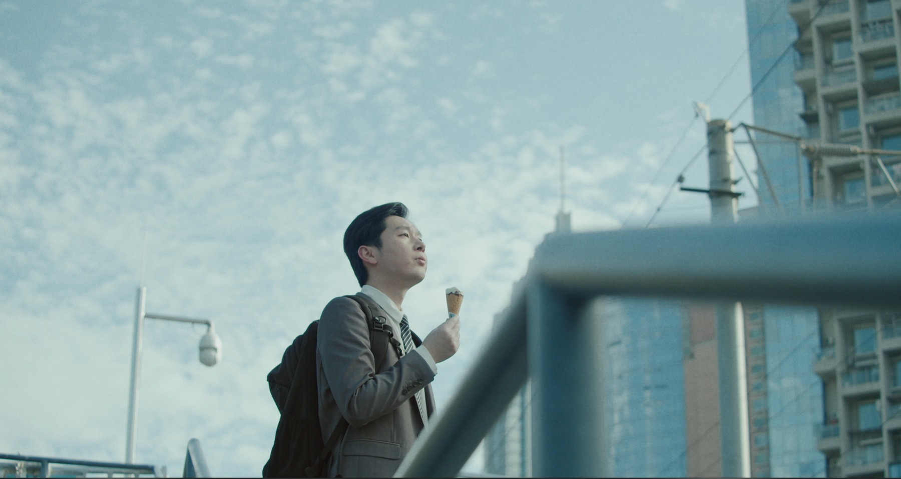
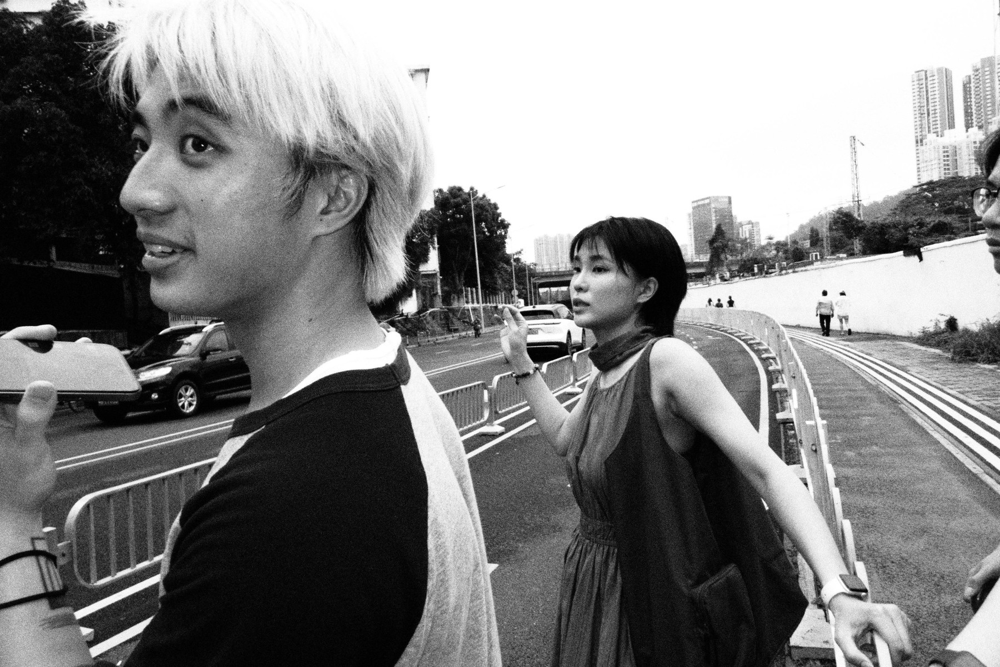

CHEN YANKANGSELECTED WORKS / 2026
COMMERCIAL
DIRECTOR.

光 / 空气 / 空间《白日梦》 / SELECTED FRAME01 / SELECTED WORKS
精选作品（10）
人物、产品与品牌故事

SHENZHEN, CHINA02 / ABOUTCHEN
CHEN
YANKANG
商业导演 / 创意
从台前到幕后，我亲自走过影像创作的不同环节。
大学表演系毕业，从剪辑、摄影，到创意策划与执行导演，如今以导演的身份从事广告创作。
我擅长观察，让人物和产品在画面里得到准确表达。
光 / 空气 / 人
在画面与观众之间。
导演的工作更像是“中间人”，在画面与观众之间，在客户与团队之间，在配合与妥协之间。
为了让一条影片顺利诞生，导演要细心观察，努力把控。这是一份又简单又复杂的工作。